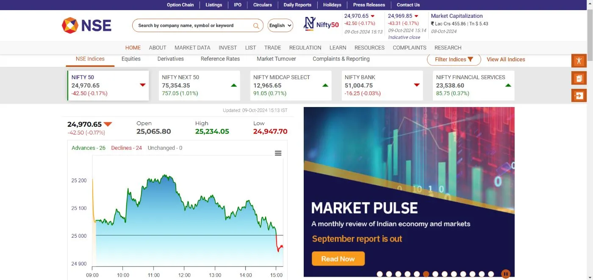
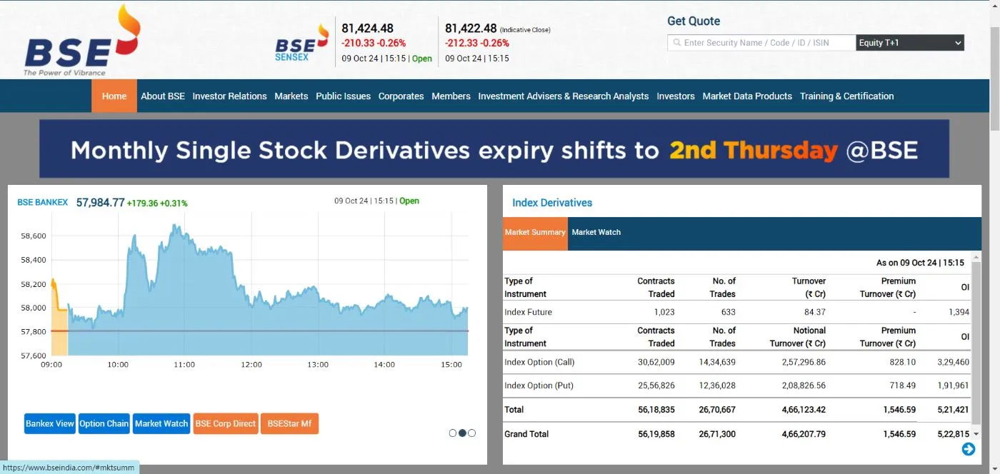

Table of Content
- What are Stock Exchanges?
- Overview of NSE and BSE
- National Stock Exchange (NSE)
- Bombay Stock Exchange (BSE)
- Key Difference Between NSE and BSE
- Age and History
- Trading Mechanism
- Market Capitalization
- Number of Listed Companies
- Index Composition
- Listing Requirements
- Investor Participation
- Advantages of NSE and BSE Exchange
- How to Choose Between NSE and BSE
- Conclusion
Difference Between NSE and BSE: NSE vs BSE
In India, when we talk about the share market, two names often come up: the National Stock Exchange (NSE) and the Bombay Stock Exchange (BSE). Both are important for buying and selling shares of companies, but they have different features and characteristics. This article we will explore the differences between NSE and BSE in a way that easy to understand. Let’s discuss NSE vs BSE.
What are Stock Exchanges?

Before discuss into the difference Between NSE and BSE, First understand what a stock exchange. A stock exchange is an investing and trading platform where stocks (a company share) are buying and selling.
Investors can trade shares of publicly listed companies, which helps companies increase money to grow their business.
Overview of NSE and BSE
National Stock Exchange (NSE)
1. Founded
National Stock Exchange (NSE) was started in 1992 in Mumbai.
2. Location
NSE is located in Mumbai.
3. Trading System
The NSE was the first in India to use a fully automated electronic trading system, which means trades happen quickly and without human involvement.
4. Main Index
The main index of the National Stock Exchange (NSE) is called the Nifty 50, which includes best 50 of the largest companies listed on the NSE exchange.
Bombay Stock Exchange (BSE)
1. Founded
The Bombay Stock Exchange is older, established in 1875, BSE is one of the oldest investing and trading stock exchanges in Asia.
2. Location
BSE is also based in Mumbai.
3. Trading System
Initially, the BSE used a manual trading system where traders executed prices in a physical space. Now, it has moved to an electronic trading and investing system.
4. Main Index
Sensex is the main index of the Bombay Stock Exchange or BSE, which tracks of the largest and most actively traded companies.

Key Difference Between NSE and BSE
1. Age and History
i) BSE
BSE is the oldest investing and trading stock exchanges; the Bombay Stock Exchange has an old history. It has seen many changes in the financial market over the years.
ii) NSE
Although newer, the NSE quickly became popular its modern approach and technology.
2. Trading Mechanism
i) BSE
The BSE has modification to electronic trading, but its older methods were slower.
ii) NSE
Nsc has been using electronic trading or online trading since early days and this has facilitated faster trading transactions.
3. Market Capitalization
i) NSE
Usually, the National Stock Exchange (NSE) has a larger market capitalization. This means it usually has a higher total value of all listed companies, attracting more investors.
ii) BSE
While it has many historical companies, the BSE often has a smaller market cap compared to the NSE.
4. Number of Listed Companies
i) NSE
More companies are listed on the NSE, making it a popular choice for investors looking for a variety of stocks.
ii) BSE
BSE has many companies listed, BSE has fewer listings than the National Stock Exchange of India, especially for large companies
5. Index Composition
i) BSE Sensex
Collected of best 30 companies, it is considered an important stock of the Indian stock market’s health.
ii) Nifty 50
Composed of 50 companies, offering a broader view of the market and often regarded for more expanded insights.
6. Listing Requirements
i) BSE
Has mostly less strict listing requirements, which might make it easier for smaller companies to get listed.
ii) NSE
Generally, has stricter rules, ensuring that only stable and reliable companies are listed.
7. Investor Participation
i) BSE
Bsc is a preferred exchange for older investors and retail investors. Its long history gives it a sense of trust.
ii) NSE
More popular among institutional investors, especially for trading derivatives (financial contracts whose value depends on the price of an underlying asset).
Advantages of NSE and BSE Exchange
Advantages of NSE
i) Speed
Because of its automated system, trades are executed quickly, allowing for instant buying and selling.
ii) Liquidity
The higher volume of trading on the NSE usually means better liquidity, making it easier to enter and exit trades.
iii) Variety of Products
The NSE offers various financial products, including equities, derivatives, and commodities, giving investors more options.
Advantages of BSE
i) Historical Trust
The BSE's long-standing presence provides many investors with a sense of trust and reliability.
ii) Variety of Listings
Hosts many smaller and regional companies, providing opportunities to invest in diverse sectors.
iii) Ease of Access
Some investors find the BSE easier to navigate due to its established systems and practices.
How to Choose Between NSE and BSE
Choosing between BSE and NSE often depends on investor preferences.
i) Investment Goals
If you are looking for larger, well-established companies, both exchanges offer great options, but the NSE might have a slight advantage with its larger listings.
ii) Trading Style
If you are an active trader who prefers quick transactions, the NSE’s automated system is a good fit. On the other hand, if you prefer a mix of old and new trading practices, the BSE might be attractive.
iii) Diversity of Choices
If you are interested in smaller companies or regional stocks, the BSE might have more options for you.
Conclusion
In summary, both the National Stock Exchange (NSE) and the Bombay Stock Exchange (BSE) are essential components of the Indian financial market. Each has its own strengths, history and characteristics.
The NSE is known for its speed and efficiency, while the BSE claims a rich history and a diverse range of companies. Understanding the differences between NSE and BSE two can help investors and traders make right decisions when it comes to buying and selling shares.
Whether you prefer the modern, fast-paced environment of the NSE or the historical significance of the BSE, both exchanges provide opportunities for investment in the Indian economy and also check our Disclaimer page.